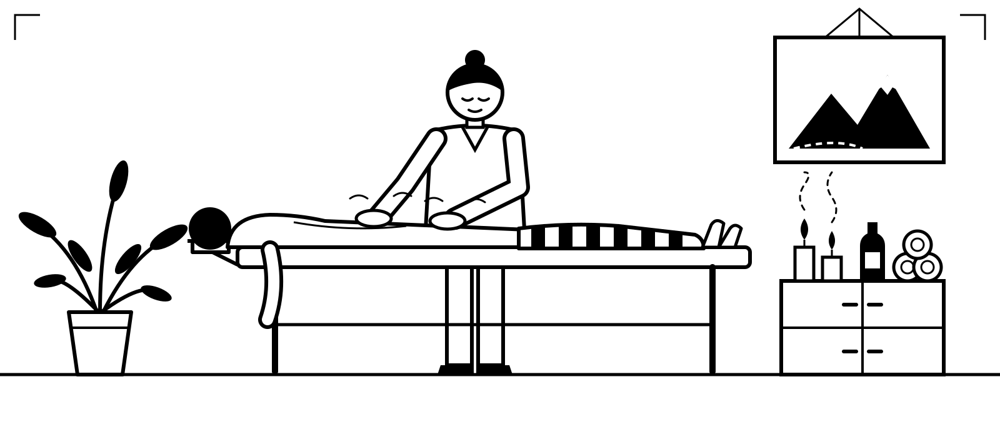
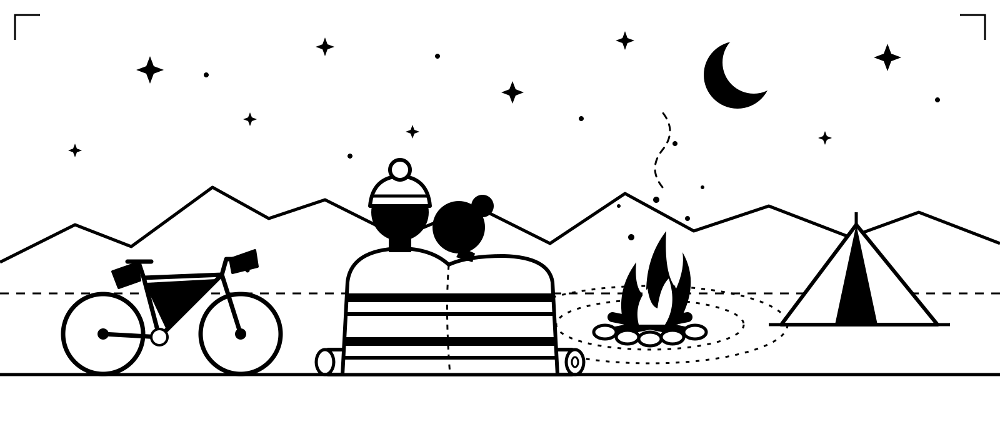
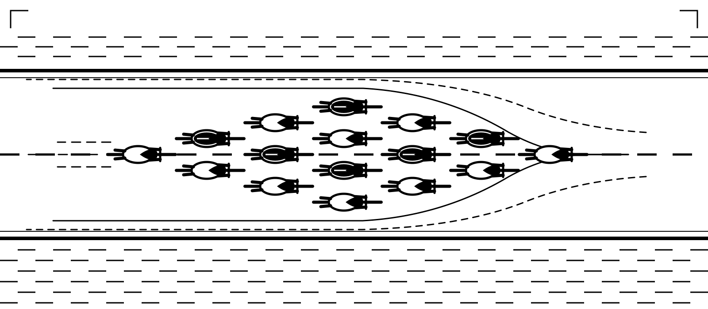
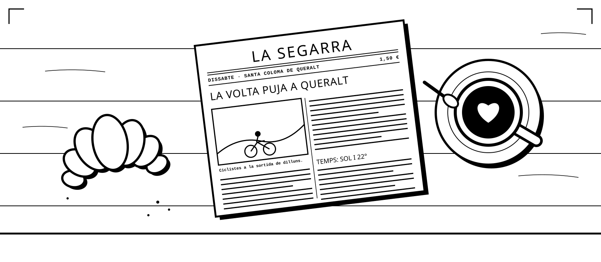

Ride Catalonia with people who know every road.
We've spent years riding the roads and tracks of Catalonia, and these are our favourites. Every trip adapts to the group's needs: from fully supported deluxe and luxury tours, with a guide, a support van and beautiful hotels, all the way down to barebones hobo-style bikepacking with everything strapped to your bike and a bivvy under the stars.
Groups are small and the pace is set by the riders. Whether you're chasing watts or chasing views, we'll match the day to you.
Camino de Santiago (Catalan Way)
Ride the Camino de Santiago from Montserrat all the way to Santiago: west across Catalonia's interior, through Aragon and La Rioja, then the Camino Francés over the meseta and into Galicia. Romanesque churches, hilltop villages and pilgrim towns. We carry your luggage; you collect the stamps.
- Distance≈ 1,100 km
- Duration2 weeks
- SurfaceRoad or gravel
- LevelModerate
- From€4,995
Training Camp
A week of structured riding on the climbs and empty roads of the Baixa Segarra and the Prades mountains. Daily sessions, coaching, ride analysis and proper recovery food.
- Distance≈ 550 km
- Duration6 days
- SurfaceRoad
- LevelHard
- From€1,980
Cultural Tour
Five easy days about everything that makes this corner of Catalonia taste the way it does: wine and cava at family cellars, olive oil mills, farms and markets, and long lunches of local food. Along the way, the monastery of Poblet, medieval Montblanc, castles and the history behind them.
- Distance≈ 250 km
- Duration5 days
- SurfaceQuiet road
- LevelEasy
- From€2,495
Quiet Roads Tour
Our home turf, without the suitcase shuffle. You stay in the same place every night in Santa Coloma de Queralt and ride a different loop each day on back roads where you'll see more tractors than cars: stone villages, castles and long views. Less bucket list, more enjoying the moment.
- Distance≈ 400 km
- Duration6 days
- SurfaceRoad
- LevelModerate
- From€1,995
Tour of Catalonia
The big one. From Girona's cycling roads up into the high Pyrenees, then down to the coves of the Costa Brava. Fully supported, with hand-picked hotels every night.
- Distance≈ 620 km
- Duration7 days
- SurfaceRoad
- LevelHard
- From€3,495
Custom
Tell us what you want to ride and we'll build it: day trips, gravel or mountain bike adventures, big epic one-day rides, multi-day bikepacking, or anything in between. Route, pace, distance and comfort level are all up to you.
- DistanceYour call
- Duration1 day or more
- SurfaceRoad, gravel or MTB
- LevelAny
- FromOn request
Add-ons
Add any of these to your trip, or ask us for something else.
- MassagePost-ride sports massage
- Guided walks & hikesVillages & Montserrat
- Beach tripCosta Daurada or Costa Brava
- Cultural eventsFestes, human towers, concerts
- Girona or BarcelonaA day in the city
- Wine tastingTrepat & cava, family cellars